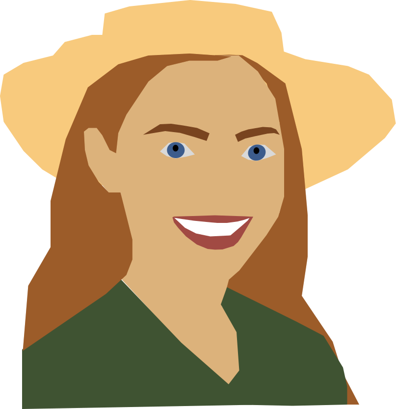
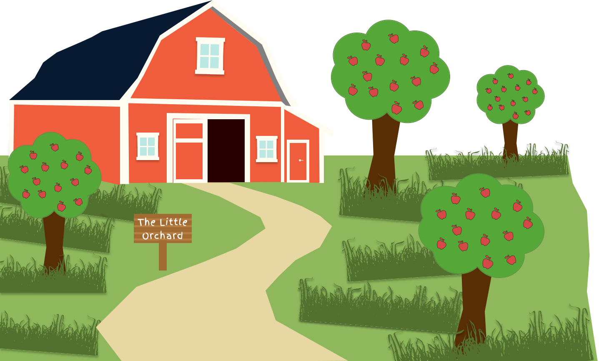
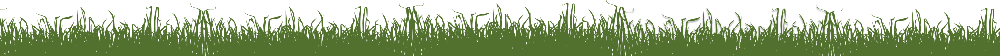

The Little
Orchard!
Appels zo fijn, die moeten wel van The Little Orchard zijn!

Appels zo fijn, die moeten wel van The Little Orchard zijn!
OVER DE EIGENARESSE
Goedele is de derde generatie fruittelster in haar familie. Ze nam het bedrijf over van haar vader, die het op zijn beurt van zijn moeder had geërfd. Ze stuurt bewust op data: welk ras levert het meeste op, welk perceel presteert het best, om slimme keuzes te maken over de toekomst van The Little Orchard.

"Je kunt geen appels met peren vergelijken maar ik doe het toch, want dat is precies wat de toekomst van The Little Orchard nodig heeft."

Over het bedrijf
Het begon in de jaren '60 met een handvol appelbomen en een eenvoudig idee: goed fruit telen op goede grond. Wat klein begon, groeide generatie na generatie uit tot een volwaardig fruitteeltbedrijf met zes percelen, meerdere appelrassen en een jaarlijkse oogst van honderden tonnen fruit.
Vandaag produceert The Little Orchard rassen zoals Elstar, Junami, Golden en Joly-Red. Elk met hun eigen karakter, prijs en plek in de markt. Een deel van de oogst gaat direct naar de afzetmarkt, een ander deel gaat de koeling in voor later. Het doel is simpel: het beste fruit, zo slim mogelijk geteeld.
